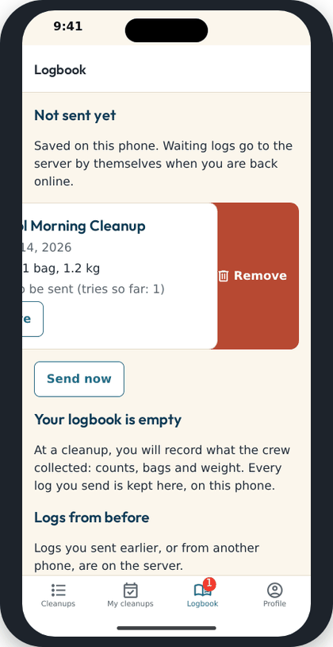
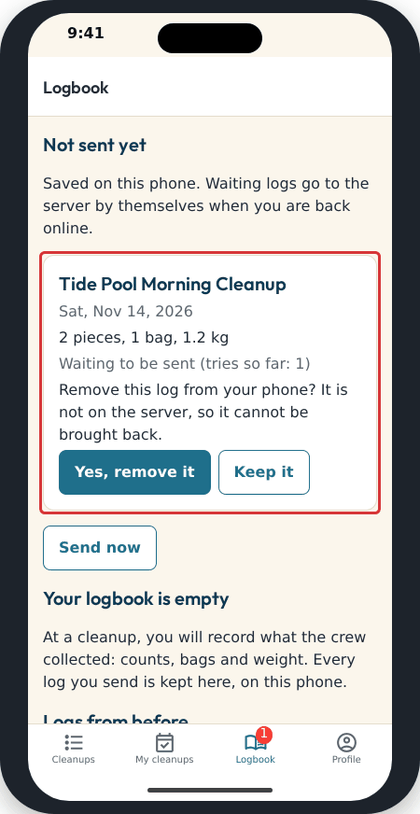
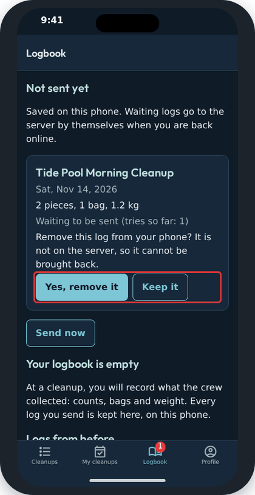

👆 Lesson 7.2: Gestures
Theo logged the same three bags twice at Tide Pool Cove: once on the beach with no signal, and once again on the bus because he thought the first one was lost. Both logs wait in his queue. In most phone apps he would know what to do without thinking: put a thumb on the extra one and push it aside. Today Shoreline Crew learns that move, with the same care as every other way of losing data in this course: the swipe asks before anything is removed, it never gets in the way of scrolling, and nobody needs to swipe at all to do the same thing.
🎯 Learning Objectives
By the end of this lesson, you will be able to:
- Explain why React Native apps read gestures with React Native Gesture Handler, on the UI thread, and set it up with
GestureHandlerRootView - Build a drag with
usePanGestureandGestureDetectorthat moves a view through Reanimated shared values and springs it into place when the finger lets go - Make a sideways swipe share the screen with vertical scrolling (
activeOffsetX,failOffsetY) and combine gestures on one view - Give every gesture a way that needs no gesture, and keep swipe rows correct in a recycled FlashList
- Decide what a swipe may do to data that has not reached the server yet
📦 Code for this lesson
Starting code: lesson-26-start.zip · Finished code: lesson-26-end.zip. Each folder has a README with the commands to run it.
In This Lesson
👋 Welcome: A Thumb, Not a Menu
Last lesson's "Before the Next Lesson" asked you to notice gestures in the apps you use. You probably found the same handful everywhere: swipe a message or an email sideways to archive or delete it, drag a list item to reorder it, pull a sheet down to close it, pinch a photo. You may also have noticed how each app tells you a gesture exists: a strip of color peeking out as you start to move, a small handle on a sheet, or nothing at all, which is why so many people never find them.
In the web course, a gesture was mostly a click, and a drag meant the HTML drag-and-drop events or pointer events. On a phone, touch is the main input, and the finger is held to a higher standard: whatever it moves has to follow it exactly, with no lag, even while the app is busy. That is a job for the UI thread you met in Lesson 7.1, and for the library every new Expo app already includes for it: React Native Gesture Handler. By the end of the lesson:
- A waiting log can be swiped. On the Logbook, each card under Not sent yet follows a finger to the left, with a red Remove strip showing through behind it.
- The swipe asks; it does not delete. Let go far enough and the card springs back into place and asks "Remove this log from your phone?"; let go too early and it simply springs back.
- Nobody has to swipe. Every card has a Remove button that leads to the same question, and a log the queue may be sending right now cannot be removed either way.
Why it matters for your work: swipe actions are among the first things a product manager asks for ("like in Mail"), and among the first things that go wrong: rows that steal the list's scroll, rows that delete what you meant to keep, rows that open on the wrong item after scrolling, and features that people using a screen reader or a switch simply cannot reach. Getting all four right is what separates a demo from an app people trust with their data.
🌱 Your fingers are the test
Gestures are about feel, and feel is learned by trying. You will drag the card in the web preview with a mouse, then on your phone with your thumb, and change the numbers that decide "far enough" until it feels right to you. If a swipe feels sticky or jumpy and you cannot say why yet, that is normal: this lesson gives you the words (activation, offsets, velocity) to say why.
🧵 Touches on the UI Thread
React Native's built-in touch handling (the "responder system" behind Pressable and ScrollView) decides who gets a touch in JavaScript. For a press that is fine: the button can answer a few milliseconds late. For a drag it is not: if the JavaScript thread is busy when the finger moves, the card stops following, then jumps to catch up. Gesture Handler moves gesture recognition to the UI thread, using each platform's own gesture system (the same one native iPhone and Android apps use), and it works hand in hand with Reanimated:
- The gesture's callbacks are worklets. The same Babel plugin that turned your
useAnimatedStylefunctions into worklets in Lesson 7.1 recognizes Gesture Handler's hooks and does the same for their callbacks (read inreact-native-worklets/plugin:usePanGesture,useTapGestureand the others are on its list). - So a callback can write a shared value every time the finger moves, and an animated style moves the view, all on the UI thread, with no React render on the way.
- To tell React something (a swipe happened), the callback uses
scheduleOnRN, exactly as in Lesson 7.1.
One setup step comes first: gestures are only recognized inside a GestureHandlerRootView. Gesture Handler's documentation asks for it as close to the root of the app as possible, around everything else, and in an Expo Router app that is the root _layout.tsx. You will add it in Step 1. The package itself is already in your project: create-expo-app installed it, Expo Router depends on it, and it is part of Expo Go, so no development build is needed.
💡 Mental model: the deckhand on the line
When the crew hauls a heavy net onto the boat, one deckhand keeps a hand on the line the whole time and feels every tug and slack, while the skipper only hears "net's in" at the end. Gesture Handler is the deckhand: it feels the finger every frame on the UI thread and moves the card with it through shared values. React is the skipper: it hears once, through scheduleOnRN, that the swipe went far enough, and decides what that means for the data. The deckhand never decides what to keep; the skipper never holds the line.
🧩 Version note: Gesture Handler 3 and its hooks
SDK 58 pins react-native-gesture-handler 3.3 (npm already has a newer 3.x; npx expo install keeps the one Expo tested). Version 3 replaced the builder API that most tutorials still show, Gesture.Pan().onUpdate(…).onEnd(…), with Hooks that take one object: usePanGesture({ onUpdate, onDeactivate, … }). The builder still exists, but its type definitions mark it deprecated: "Gesture.Pan() is deprecated and will be removed in the future. Please use usePanGesture instead." Callback names changed with it: onStart became onActivate and onEnd became onDeactivate, and onChange folded into onUpdate. Even older code wraps views in <PanGestureHandler> components (Gesture Handler 1): that is two versions back.
✋ A First Drag
Here is the smallest useful gesture: a round marker you can drag anywhere on the screen, which springs back home when you let go.
import { StyleSheet } from 'react-native';
import { GestureDetector, usePanGesture } from 'react-native-gesture-handler';
import Animated, { useAnimatedStyle, useSharedValue, withSpring } from 'react-native-reanimated';
// A marker the finger can drag anywhere. Let go, and a spring brings it home.
export function DragHome() {
const x = useSharedValue(0);
const y = useSharedValue(0);
const pan = usePanGesture({
// On the UI thread, every time the finger moves: how far it is from where it started
onUpdate: (event) => {
x.set(event.translationX);
y.set(event.translationY);
},
// The finger lifted (or the system took the touch away): spring back from wherever it is
onDeactivate: () => {
x.set(withSpring(0));
y.set(withSpring(0));
},
});
const moved = useAnimatedStyle(() => ({
transform: [{ translateX: x.get() }, { translateY: y.get() }],
}));
return (
<GestureDetector gesture={pan}>
<Animated.View style={[styles.marker, moved]} />
</GestureDetector>
);
}
const styles = StyleSheet.create({
marker: { width: 56, height: 56, borderRadius: 28, backgroundColor: '#1f6f8b' },
});usePanGesture({ … })creates a pan gesture: a finger that goes down and moves. Like any Hook, it is called on every render and keeps one gesture for the component's life.<GestureDetector gesture={pan}>attaches it to the view inside. The child must be a real view (here anAnimated.View, because it moves).event.translationXandtranslationYare how far the finger has moved since the gesture started. Writing them into shared values moves the marker through the animated style: React never renders while you drag.- When the finger lifts,
onDeactivatehands each shared value a spring back to 0, starting from wherever it was. That is the "drag something into place, and let springs finish the move" that Lesson 7.1 promised: the finger drives, the spring finishes.
The course measured it in the web preview: with the mouse dragged 120 points right and 80 down, the marker sat at about 102 and 68 (the gesture only starts once the pointer has moved a little, and that first bit is not counted on the web), and after letting go it was at 66, 29, 11, 4 and 1.4 points from home at 80 ms intervals, then home. A pan gesture goes through these callbacks, all worklets on the UI thread:
| Callback | When | Typical use |
|---|---|---|
onBegin | A finger touched the view; the gesture may still turn out to be something else | A pressed look |
onActivate | The gesture is recognized: the finger moved far enough in the right direction | Remember where a drag started (Exercise 3) |
onUpdate | Every move while active; the event has translationX/Y, changeX/Y (since the last update), velocityX/Y (points per second), x/y | Follow the finger |
onDeactivate | An active gesture ended: the finger lifted, or the system took the touch away (event.canceled tells which) | Decide: far enough? Spring into place |
onFinalize | Always last, whether the gesture ever activated or not | Undo whatever onBegin did |
Besides pan, Gesture Handler 3 has useTapGesture (with numberOfTaps for double taps), useLongPressGesture, useFlingGesture (a quick swipe in one direction, no following), usePinchGesture and useRotationGesture (two fingers), useHoverGesture (a mouse or a pen, not a finger), plus useNativeGesture and useManualGesture for advanced cases. They all take one config object and go into a GestureDetector the same way.
♿ Every Gesture Needs Another Way
A swipe is invisible until someone tries it, and some people cannot do it at all: a screen reader turns a one-finger swipe into "next item", switch control and voice control have no path to drag along, a tremor or a thumb in a work glove makes a precise horizontal drag hard, and in the web preview there may be only a keyboard. The Web Content Accessibility Guidelines say it plainly (success criterion 2.5.1, Pointer Gestures): anything done with a path-based gesture such as a swipe must also be possible with a single tap or click, unless the path itself is the point (drawing a signature). So in Shoreline Crew the rule is: a gesture is a shortcut, never the only door.
| Way | Who it reaches | Shoreline Crew |
|---|---|---|
| A visible button | Everyone: a finger that taps, a mouse, a keyboard (Tab, then Enter), a screen reader, switch and voice control | Remove on every waiting card, labeled "Remove the log for Tide Pool Morning Cleanup" for screen readers |
accessibilityActions + onAccessibilityAction | Screen reader users only (VoiceOver's rotor "Actions", TalkBack's actions menu), on an element marked accessible | Not used: the card is not one accessible element (its buttons must stay reachable), and a button already covers screen readers |
| The gesture | People who know it is there and can do it | Swipe left on the card |
Accessibility actions are the right tool when a row is a single accessible element with nothing else inside, like an email in a list where the whole row opens the message: VoiceOver then offers "Delete" in its actions without a visible button. Lesson 8.1's bonus challenge tries them with a screen reader in hand. A visible button also solves the other problem of swipes: people who never discover them. The red strip that shows through as the card moves is the second hint.
And motion? Following the finger is not animation, it is direct manipulation: the card moves because you move it, so it moves for everyone, Reduce Motion or not. What happens after you let go is animation, and it already follows Lesson 7.1's rules: withSpring defaults to ReduceMotion.System. Measured with reduced motion on in Chromium: the card followed the pointer to 180 points as usual, and was back at 0 at the very next sample after release, with no spring.
📜 Swipe Rows in Long Lists
The Logbook's queue is a short list (a few waiting logs at most) drawn with map inside a scrolling Screen, so every card is its own component with its own key. In a long list you would use FlashList (Lesson 3.2), and FlashList recycles: when a row scrolls off screen, its component is not destroyed but reused for a row coming on screen, with new props. Anything the row keeps in its own state comes along to the new item. Lesson 3.2 met this with useRecyclingState; swipe rows meet it twice:
- The row's position.
SwipeToRemovealways springs back to 0, so a recycled row starts in place. A row that stays open (a "swipe to reveal buttons" design) must close itself when its item changes, or the next item appears half open. - What the row is asking. Keep "which item is being asked about" in the list's parent, keyed by id, not in the row:
import { FlashList } from '@shopify/flash-list';
import { useState } from 'react';
import { StyleSheet, Text } from 'react-native';
import { SwipeToRemove } from '@/components/SwipeToRemove';
type Item = { id: string; title: string };
// Swipe rows in a recycled list: the "asking" state lives in the list, keyed by id, not in the row
export function SwipeList({ items }: { items: Item[] }) {
const [asking, setAsking] = useState<string | null>(null);
return (
<FlashList
data={items}
keyExtractor={(item) => item.id}
extraData={asking} // the rows depend on it: tell FlashList to draw them again when it changes
renderItem={({ item }) => (
<SwipeToRemove onSwipe={() => setAsking(item.id)}>
<Text style={styles.row}>
{item.title}
{asking === item.id && ': remove it?'}
</Text>
</SwipeToRemove>
)}
/>
);
}
const styles = StyleSheet.create({
row: { padding: 16, backgroundColor: '#ffffff' },
});extraData={asking} tells FlashList that its rows depend on something besides data, so it draws them again when asking changes. Measured in the web preview with 300 rows: after swiping Item 2 and scrolling far down, no row on screen said "remove it?" (Item 2 was off screen, still marked in the parent). The same list with useState inside each row showed "Item 95: remove it?" after the same scroll: a row that was never swiped (Common Mistakes).
In the Logbook, asking lives in MyLogbook for the same reason, even though map with keys would not mix rows up: it is one rule that works in both kinds of list, and it means only one card can ask at a time.
⚠️ Common Mistakes
Each of these was made on purpose in a copy of the finished project. Where the web preview cannot show the result, the card says so and quotes the library's own code.
⚠️ No GestureHandlerRootView
Measured: with the root view taken out of _layout.tsx, the web preview did not mind at all. The card still followed the mouse and asked. tsc and expo lint were silent too. On a phone it is different: Gesture Handler's code checks for the root view in development builds of the app (Expo Go runs your app that way) on every platform except the web, and stops with a red screen:
Expected output (on a phone, from the library's code)
GestureDetector must be used as a descendant of GestureHandlerRootView. Otherwise the gestures will not be recognized. See https://docs.swmansion.com/react-native-gesture-handler/docs/fundamentals/installation for more details.One root view around the whole app, in the root layout, is all it takes: every Shoreline Crew screen, the tabs and the modal routes included, is drawn inside it. Gesture Handler's documentation names one exception you may meet later: content inside React Native's own <Modal> component needs a root view of its own.
⚠️ Callback names from an older tutorial
Copying onEnd (or onStart) from a Gesture Handler 2 example into usePanGesture does not silently do nothing: the config object is typed, so npx tsc --noEmit names the property it does not know. Measured with onDeactivate renamed to onEnd:
Expected output
src/components/SwipeToRemove.tsx:42:5 - error TS2353: Object literal may only specify known properties, and 'onEnd' does not exist in type 'PanGestureConfig'.
42 onEnd: (event) => {
~~~~~
src/components/SwipeToRemove.tsx:42:13 - error TS7006: Parameter 'event' implicitly has an 'any' type.
42 onEnd: (event) => {
~~~~~
Found 2 errors in the same file, starting at: src/components/SwipeToRemove.tsx:42The second error follows from the first: for a property it does not know, TypeScript cannot tell what event is. Fix the first, and both go. The names are now onActivate and onDeactivate (the table in A First Drag). If a tutorial writes Gesture.Pan().onUpdate(…), translate it to the Hook: the settings and callbacks become properties of one object.
⚠️ A swipe with no direction rules
Leave out activeOffsetX and failOffsetY, and the pan becomes active on any movement. Measured with a mouse drag of 60 points sideways and 160 down (someone scrolling, a little crooked): the card slid 9, 24, 39, then 54 points to the left before springing back. On a phone it is worse: the swipe has won the touch, so the list does not scroll at all while the card wobbles sideways. With the two settings, the same drag left the card at translateX(0px) the whole time.
⚠️ Swipe state inside a recycled row
In a FlashList, a row that keeps "I am asking" in its own useState passes it on when FlashList reuses the row for another item:
import { FlashList } from '@shopify/flash-list';
import { useState } from 'react';
import { StyleSheet, Text } from 'react-native';
import { SwipeToRemove } from '@/components/SwipeToRemove';
type Item = { id: string; title: string };
// DON'T: the row keeps "asking" in its own state. FlashList reuses the row for another item.
function Row({ item }: { item: Item }) {
const [asking, setAsking] = useState(false);
return (
<SwipeToRemove onSwipe={() => setAsking(true)}>
<Text style={styles.row}>
{item.title}
{asking && ': remove it?'}
</Text>
</SwipeToRemove>
);
}
export function SwipeListRowState({ items }: { items: Item[] }) {
return <FlashList data={items} keyExtractor={(item) => item.id} renderItem={({ item }) => <Row item={item} />} />;
}
const styles = StyleSheet.create({
row: { padding: 16, backgroundColor: '#ffffff' },
});Measured with 300 rows in the web preview: Item 2 was swiped and asked, the list was scrolled far down, and "Item 95: remove it?" appeared on a row nobody had touched. Pressing "Yes" there would have removed the wrong log. Keep the state in the parent, keyed by id, as Swipe Rows in Long Lists shows (or use FlashList's useRecyclingState with the item's id, Lesson 3.2).
⚠️ A swipe as the only way
Nothing in tsc or expo lint looks for this one: a feature that only a swipe reaches works perfectly for the person who built it. For a screen reader user, a keyboard user in the web preview, or anyone who never guesses the gesture, it does not exist. Every gesture in this course gets a button (or, for a single accessible element, an accessibility action) that does the same thing.
🛠️ Project: Swipe a Log Away
First the data rule. Until today, only a log the server refused could be removed (Lesson 5.5): a waiting log could only wait. Theo's double log shows why that is not enough: a log saved by mistake would be sent, sooner or later, and counted. So a waiting log may now be removed too, with two conditions, because it has not reached the server and nothing can bring it back:
- The app asks first, every time, whether the request came from a swipe or a button.
- Not while the queue is sending. The sender may be uploading that very log; removing it halfway would leave the server with a log the phone no longer shows. While "Sending…" is on screen, the cards do not move and their Remove buttons are disabled.
Refused logs follow the same rules, so every card in Not sent yet behaves the same way.
Step 1: The root view (10 min)
Gesture Handler is already installed. Check it in the shoreline-crew folder:
npm ls react-native-gesture-handlerExpected output
shoreline-crew@1.0.0 ~/shoreline/shoreline-crew
├─┬ expo-router@58.0.31
│ ├─┬ react-native-drawer-layout@4.2.12
│ │ └── react-native-gesture-handler@3.3.0 deduped
│ └── react-native-gesture-handler@3.3.0 deduped
└── react-native-gesture-handler@3.3.0Your own dependency is the last line; Expo Router uses the same copy (deduped). Now wrap the whole app in src/app/_layout.tsx. The root view goes outside everything else, and everything that was there moves in by two spaces (your editor's Format Document does it):
import { useEffect, useState } from 'react';
+import { StyleSheet } from 'react-native';
+import { GestureHandlerRootView } from 'react-native-gesture-handler';
// ...
return (
- // The one cache, for every screen (as in the HQ)
- <QueryClientProvider client={queryClient}>
+ // Gestures (swipes, drags) work only inside this view: it wraps the whole app, once
+ <GestureHandlerRootView style={styles.root}>
+ {/* The one cache, for every screen (as in the HQ) */}
+ <QueryClientProvider client={queryClient}>
// ...
- </QueryClientProvider>
+ </QueryClientProvider>
+ </GestureHandlerRootView>
);
}
+
+const styles = StyleSheet.create({
+ root: { flex: 1 },
+});flex: 1matters: the root view is a realView, and without it the app inside would have no height (in the web preview, a blank page).- The comment that opened the JSX moves inside the root view, so it is now a JSX comment (
{/* … */}), like the others in the file. - The splash screen, fonts, session and queue loading above the
returnstay exactly as they are.
Step 2: The SwipeToRemove component (25 min)
The strip behind the card shows a trash icon. Add it to the icon table (Lesson 2.3) in src/components/Icon.tsx:
clear: { ios: 'xmark.circle.fill', android: 'cancel', web: 'cancel' },
+ remove: { ios: 'trash', android: 'delete', web: 'delete' },
// The tab barThen create src/components/SwipeToRemove.tsx. It knows nothing about logs: it moves whatever you put inside it, and calls onSwipe when a swipe goes far enough.
import type { ReactNode } from 'react';
import { StyleSheet, View } from 'react-native';
import { GestureDetector, usePanGesture } from 'react-native-gesture-handler';
import Animated, {
interpolate,
useAnimatedStyle,
useSharedValue,
withSpring,
} from 'react-native-reanimated';
import { scheduleOnRN } from 'react-native-worklets';
import { AppText } from '@/components/AppText';
import { Icon } from '@/components/Icon';
import { createThemedStyles } from '@/hooks/useTheme';
import { radius, spacing } from '@/theme/spacing';
type SwipeToRemoveProps = {
children: ReactNode;
/** Called on the JavaScript thread when the row is swiped far enough to the left */
onSwipe: () => void;
/** false: the row does not move (removing is not allowed right now) */
enabled?: boolean;
};
const reach = 120; // how far to the left (in points) the finger must pull the row...
const flick = -800; // ...or how fast (points per second, leftwards) a short flick must be
// A row the finger can pull to the left. Let go far enough and it asks to be removed (onSwipe);
// either way it springs back into place. A shortcut: the row must have a Remove button too.
export function SwipeToRemove({ children, onSwipe, enabled = true }: SwipeToRemoveProps) {
const offset = useSharedValue(0); // how far the row has moved, in points
const styles = useStyles();
const pan = usePanGesture({
enabled,
activeOffsetX: [-12, 12], // 12 points sideways first: this is a swipe...
failOffsetY: [-10, 10], // ...10 points up or down first: a scroll, so the swipe lets go
// These run on the UI thread, many times a second, while the finger moves
onUpdate: (event) => {
offset.set(Math.min(0, event.translationX)); // follow the finger, leftwards only
},
onDeactivate: (event) => {
if (offset.get() < -reach || event.velocityX < flick) {
scheduleOnRN(onSwipe); // React decides what a swipe means
}
offset.set(withSpring(0)); // back into place, from wherever the finger let go
},
});
const moved = useAnimatedStyle(() => ({ transform: [{ translateX: offset.get() }] }));
// The word behind the row shows more as the row moves: fully there at the reach
const revealed = useAnimatedStyle(() => ({
opacity: interpolate(offset.get(), [-reach, 0], [1, 0], 'clamp'),
}));
return (
<View>
{/* Behind the row. Only a picture of what the swipe does: screen readers skip it */}
<Animated.View
style={[styles.behind, revealed]}
accessibilityElementsHidden
importantForAccessibility="no-hide-descendants"
>
<Icon name="remove" color={styles.word.color} />
<AppText style={styles.word}>Remove</AppText>
</Animated.View>
<GestureDetector gesture={pan}>
<Animated.View style={moved}>{children}</Animated.View>
</GestureDetector>
</View>
);
}
const useStyles = createThemedStyles(({ badges }) => StyleSheet.create({
behind: {
...StyleSheet.absoluteFill,
flexDirection: 'row',
alignItems: 'center',
justifyContent: 'flex-end',
gap: spacing.xs,
paddingHorizontal: spacing.md,
borderRadius: radius.card,
backgroundColor: badges.danger.background,
},
word: {
color: badges.danger.text,
fontWeight: '600',
},
}));- One shared value,
offset: how far the row has moved.onUpdatewrites the finger'stranslationXinto it, clamped withMath.min(0, …)so the row only goes left; the animated stylemovedturns it into atranslateX. - Far enough, or fast enough.
onDeactivatechecks the distance (120 points, about a third of a phone's width) or the speed: a quick flick to the left at more than 800 points per second counts even if it was short. Measured with a simulated finger: a 72-point flick released at about 840 points per second asked; a slower 70-point move (about 600 points per second) did not. - React decides. The callback does not remove anything:
scheduleOnRN(onSwipe)tells the JavaScript thread, and the screen decides what a swipe means. Either way,withSpring(0)brings the row back into place. - The strip behind is an absolutely positioned view under the row (
StyleSheet.absoluteFill, Lesson 2.2), in the danger badge's colors. Its opacity follows the offset with Reanimated'sinterpolate: invisible at 0, fully there at the reach, so it tells the finger "keep going" as it moves. It is hidden from screen readers: it is a picture of the gesture, not a control. enabledswitches the gesture off. A disabled pan does not activate, so the row does not move at all.
Step 3: The Logbook asks first (20 min)
In src/app/(tabs)/logbook.tsx, import the component and keep, in MyLogbook, which log is being asked about:
import { Link } from 'expo-router';
+import { useState } from 'react';
import { StyleSheet, View } from 'react-native';
// ...
import { ShareLogbook } from '@/components/ShareLogbook';
+import { SwipeToRemove } from '@/components/SwipeToRemove';
import { Tally } from '@/components/Tally';
// ...
const removeLog = useLogQueue((state) => state.remove);
+ // The log the volunteer asked to remove (a swipe or the Remove button): its card asks first
+ const [asking, setAsking] = useState<string | null>(null);
const styles = useStyles();Then replace waitingEntry. The card's contents are the same as before; what changes is around them (the swipe) and at the bottom (Remove, or the question):
function waitingEntry(item: QueuedLog) {
const { event, log } = item;
const pieces = log.items.reduce((sum, { count }) => sum + count, 0);
return (
// Swipe left to ask; never while the queue is sending (it may be sending this very log)
<SwipeToRemove
key={log.clientId}
enabled={!sending}
onSwipe={() => setAsking(log.clientId)}
>
<View style={styles.card}>
<AppText variant="heading">{event.title}</AppText>
<AppText variant="muted">{formatDate(event.date)}</AppText>
<AppText>{amounts({ pieces, bags: log.bags, weightKg: log.weightKg })}</AppText>
<PhotoStrip photos={item.photos} />
{item.status === 'waiting' ? (
<AppText variant="muted">
Waiting to be sent{item.attempts > 0 && ` (tries so far: ${item.attempts})`}
</AppText>
) : (
<AppText variant="error">Not sent: {item.problem}</AppText>
)}
{asking === log.clientId ? (
// The log is not on the server: once removed, it is gone. So the card asks first.
<>
<AppText accessibilityLiveRegion="polite">
Remove this log from your phone? It is not on the server, so it cannot be brought
back.
</AppText>
<View style={styles.choices}>
<Button
label="Yes, remove it"
variant="primary"
disabled={sending}
onPress={() => {
setAsking(null);
removeLog(log.clientId);
item.photos.forEach((photo) => forgetPhoto(photo.uri)); // its photos go too
}}
/>
<Button label="Keep it" onPress={() => setAsking(null)} />
</View>
</>
) : (
// The way to remove a log without a swipe: for every finger, mouse, keyboard and
// screen reader
<Button
label="Remove"
accessibilityLabel={`Remove the log for ${event.title}`}
disabled={sending}
onPress={() => setAsking(log.clientId)}
/>
)}
</View>
</SwipeToRemove>
);
}And a style for the two answers, side by side (wrapping onto two lines if the text is large):
},
+ choices: {
+ flexDirection: 'row',
+ flexWrap: 'wrap',
+ gap: spacing.sm,
+ },
card: {- The key moves to
SwipeToRemove: it is now the outermost elementmapreturns. - Two doors, one room. The swipe (
onSwipe) and the Remove button (onPress) both callsetAsking(log.clientId). Everything after that is ordinary React: the card shows the question, Yes, remove it removes the log and its photos (as Lesson 6.2's Remove did), Keep it goes back. - Remove is now on waiting cards too, not only refused ones, and it no longer removes at once: it asks. The question is a polite live region: on an Android phone, TalkBack reads it when it appears (
accessibilityLiveRegionis Android's; on the web it becomesaria-live). On an iPhone, VoiceOver does not use live regions; Lesson 8.1 looks at announcing changes there. sendinglocks both doors.enabled={!sending}stops the swipe, anddisabled={sending}greys out Remove and Yes. Measured with the server never answering (the queue stuck on "Sending…"): a 180-point mouse drag left the card attranslateX(0px), and the Remove button wasaria-disabled.- One question at a time.
askingholds one id: asking about a second card closes the first question.
Step 4: Swipe it, then tune it (15 min)
To have a log waiting, it must not reach the server. Start shoreline-api and npx expo start, open the web preview (w) and sign in as theo.nakamura@example.com (password shoreline-demo). Open today's Tide Pool Morning Cleanup, Log what you collected, and fill in a small log. Before you send it, stop shoreline-api with Ctrl+C in its terminal (the same keys on a Mac). Now Send the log: it is "Saved on this phone". Open the Logbook:
- Press the mouse on the card's title, drag to the left and hold: the card follows, and the red Remove strip fades in behind it.
- Let go after a short drag: the card springs back, nothing else happens.
- Drag well past a third of the card and let go: the card springs back and asks. Press Keep it.


Now tune it in SwipeToRemove.tsx, one change at a time, and put each line back afterwards:
reach = 40: almost any drag now asks. Too easy to trigger by accident? Thenreach = 250: on a narrow phone, a thumb barely gets there.- In
onDeactivate,withSpring(0, { dampingRatio: 0.4 }): the card bounces past its place. Fun once, tiring by the tenth log; Reanimated 4's default spring settles without overshooting (Lesson 7.1). - Remove
Math.min(0, …): the card now follows to the right too, where nothing waits for it. Moving only in a direction that does something is part of telling the user what the gesture is for.
Step 5: Without a swipe, and without motion (10 min)
Still in the web preview, with the log waiting:
- Put the mouse away. Press Tab until the card's Remove button is focused, press Enter: the same question. Tab to Yes, remove it and press Enter: the card and the "Not sent yet" heading disappear, and the Logbook tab loses its badge.
- Turn on Chrome's reduced-motion emulation (Lesson 7.1, Step 6: DevTools, ⋮ > More tools > Rendering), reload and sign in again, send another log with the API stopped, and swipe: the card follows the mouse as before, and is back in place the instant you let go, with no spring. Turn the emulation off.
- Start shoreline-api again and press Send now. While "Sending…" shows, try to drag the card: it does not move. (It is quick; a slow connection makes it easier to see.)

Step 6: Check it, then feel it on your phone (10 min)
Run npx tsc --noEmit and npx expo lint: both should print nothing but the env: lines. Then in Expo Go (with your computer's address in .env.local, Lesson 5.1), get a log waiting the same way (stop the API just before sending), and on the Logbook:
- Swipe the card left with your thumb: it should stick to your thumb with no lag, show the red strip, and ask when you let go far enough. A quick short flick should ask too.
- With several logs waiting (or a long logbook below), start a drag on a card going up: the screen should scroll, and the card should not move sideways.
- Turn on VoiceOver (iPhone) or TalkBack (Android phone) and move through the card: the red strip is never read, and Remove should be read as "Remove the log for Tide Pool Morning Cleanup" and a button. A double tap brings the question (TalkBack should read it out; with VoiceOver, swipe right to reach it).
If the swipe feels too easy or too hard on your phone, change reach and note which value you chose and why: that is a design decision worth a line in your commit message.
✅ Project Completion Checklist
- The root layout wraps the app in
GestureHandlerRootViewwithflex: 1 src/components/SwipeToRemove.tsxfollows the finger to the left withusePanGestureand a shared value, gives up on vertical moves, and springs back into place- A swipe far or fast enough asks "Remove this log from your phone?"; a short one does nothing
- Every card in Not sent yet has a Remove button that leads to the same question; nothing is removed without Yes, remove it
- While the queue is sending, the cards do not move and Remove is disabled
npx tsc --noEmitandnpx expo lintpass
Your own app: list the gestures your final project's app should have (swipe, drag, pull, pinch). For each, write the button or other non-gesture way that does the same thing, and what it does to data that has not been saved anywhere else yet.
🏋️ Hands-on Exercises
Optional, but recommended: each one takes five to fifteen minutes. Undo code changes afterwards; the next lesson starts from the project as Step 6 left it.
🏋️ Exercise 1: What does the card do?
Theo has one log waiting. Without running anything, say what happens in each case:
- He drags the card 60 points to the left, slowly, and lets go.
- He flicks it 70 points to the left in a fraction of a second.
- He puts his thumb on the card and pulls straight up.
- The Logbook shows "Sending…" and he swipes the card far to the left.
- He has Reduce Motion on, swipes far, and lets go.
💡 Hint
Go through SwipeToRemove in order: does the pan become active at all (enabled, the two offsets)? If it does, what does onDeactivate check, and what does withSpring do with Reduce Motion on?
✅ Solution
(1) The card follows, then springs back; nothing is asked: 60 is short of the 120-point reach, and a slow move is far below 800 points per second. (2) It asks: the distance is short, but the speed at release is above 800 points per second (measured: about 840 for a quick 72-point flick). (3) The screen scrolls (on a phone) and the card does not move: 10 points of vertical movement come before 12 sideways, so the swipe fails. (4) Nothing moves: enabled is false while sending, and Remove is disabled too. (5) The card follows his thumb as usual (that is not animation), asks, and is back in place at once, with no spring.
🏋️ Exercise 2: A tick at the reach
Mail apps give a small tap when a swipe has gone far enough that letting go will act. Add one to SwipeToRemove: a light haptic (Haptics.selectionAsync() from Lesson 6.5's expo-haptics) once, at the moment the row crosses the reach going left, and only if the volunteer's vibration switch is on.
💡 Hint
Lesson 7.1's useAnimatedReaction watches something on the UI thread and reacts when it changes: watch offset.get() < -reach. Haptics are not a worklet, so they go through scheduleOnRN. Lesson 6.5's readSettings().hapticsOn tells you the switch.
✅ Solution
Add useAnimatedReaction to the Reanimated import, import * as Haptics from 'expo-haptics'; and import { readSettings } from '@/state/settings';, then a function next to the constants and a reaction before moved:
// A light tick: "let go now and it happens". Follows the vibration switch from Lesson 6.5.
function tick() {
if (readSettings().hapticsOn) {
Haptics.selectionAsync().catch(() => {});
}
}
// (inside SwipeToRemove) On the UI thread: did the row just cross the reach, going left? Then tick, once.
useAnimatedReaction(
() => offset.get() < -reach,
(past, before) => {
if (past && before === false) {
scheduleOnRN(tick);
}
},
);The reaction fires only when the answer changes, so the tick comes once per crossing, not once per frame. before === false (not just !before) skips the very first run, when before is null. Crossing back and forth ticks each time you cross going left, which is what tells the thumb where the line is.
🏋️ Exercise 3: A drag that stays (Stretch)
Change DragHome from A First Drag so the marker stays where the finger leaves it, and the next drag starts from there instead of jumping back to the corner. Try it in a scratch screen.
💡 Hint
translationX always starts at 0 for a new drag. Save where the marker was when the drag began (onActivate) in two more shared values, and add the translation to them.
✅ Solution
import { StyleSheet } from 'react-native';
import { GestureDetector, usePanGesture } from 'react-native-gesture-handler';
import Animated, { useAnimatedStyle, useSharedValue } from 'react-native-reanimated';
// A marker that stays where the finger leaves it: each drag starts from where the last one ended
export function DragStay() {
const x = useSharedValue(0);
const y = useSharedValue(0);
const startX = useSharedValue(0);
const startY = useSharedValue(0);
const pan = usePanGesture({
onActivate: () => {
startX.set(x.get()); // where the marker was when this drag began
startY.set(y.get());
},
onUpdate: (event) => {
x.set(startX.get() + event.translationX);
y.set(startY.get() + event.translationY);
},
});
const moved = useAnimatedStyle(() => ({
transform: [{ translateX: x.get() }, { translateY: y.get() }],
}));
return (
<GestureDetector gesture={pan}>
<Animated.View style={[styles.marker, moved]} />
</GestureDetector>
);
}
const styles = StyleSheet.create({
marker: { width: 56, height: 56, borderRadius: 28, backgroundColor: '#1f6f8b' },
});No spring at the end: the marker stays. To snap it to the nearest corner instead, set x and y to a spring towards that corner in onDeactivate: the same "finger drives, spring finishes" idea as today's project.
🎯 Quick Quiz
🎯 Check Your Understanding
Question 1: Why does Shoreline Crew read the swipe with Gesture Handler instead of watching touches in React state?
Question 2: A teammate's swipe row works in the web preview, but on a phone the app stops with a red screen as soon as the Logbook opens. What is the most likely cause?
Question 3: Volunteers complain that the Logbook will not scroll when their thumb starts on a waiting card; the card wobbles sideways instead. What fixes it on a phone?
Question 4: Maya uses VoiceOver. How does she remove a waiting log in today's app?
Question 5: In a FlashList of 300 swipe rows, each row keeps const [asking, setAsking] = useState(false). Item 2 is swiped, then the list is scrolled far down. What can happen?
❓ Common Questions at This Stage
Gesture Handler ships a ready-made swipeable row. Why build one?
It does: react-native-gesture-handler/ReanimatedSwipeable is a component with buttons revealed under the row on either side, friction and thresholds as props, and methods to open and close it. It is a good choice for a "swipe to reveal actions" design. Building SwipeToRemove yourself taught you what it does inside (a pan, a shared value, a spring, a threshold), which is what you need to tune one, debug one, or build the drags no component covers. If you use the ready-made row, the rules of today still apply: a non-gesture way, no destructive action without asking, and its open or closed state reset when FlashList recycles the row.
Why does the card ask instead of disappearing, like an email?
A deleted email usually goes to a trash folder or offers an Undo, because the server still has it. A waiting log exists only on this phone: once removed, it is gone. An Undo would be another option (remove at once, keep the log for a few seconds with an "Undo" button, delete the photos when the time is up), but it needs timers, a place to keep the removed log, and care when the screen closes in between. A question is simpler and just as safe. For data the server has, swipe-and-undo is often the friendlier design.
Does the swipe work with a mouse in the web preview?
Yes. Measured in Chromium: a mouse drag and a simulated finger both moved the card, sprang it back and asked, with the same numbers. The web preview cannot show how it feels (and, as the warning in Sharing the Finger says, touch scrolling that starts on a row behaves differently there), so judge the feel on your phone.
Can a swipe and a long press live on the same card?
Yes: make both gestures and combine them with useCompetingGestures(pan, longPress): whichever activates first wins and cancels the other, so a finger that moves sideways swipes and a finger that stays still long enough presses. Keep the same rule as today: whatever the long press does needs a visible way too (a menu button), because a long press is as invisible as a swipe.
My Android bundle grew again. Is that Gesture Handler?
Yes, a little. Like Reanimated in Lesson 7.1, Gesture Handler was installed from the start, and today your own code imports it for the first time. Measured with npx expo export: the Android bundle went from about 5.6 MB to 5.9 MB and the iOS bundle from about 5.4 MB to 5.7 MB; the web bundle stayed about 1.1 MB. The native part was already in Expo Go.
🌟 Going Further: Bonus Challenge
Make the queue's order something a volunteer can change: a drag handle on each waiting card that lifts the card on a long press (activateAfterLongPress on the pan) and lets it be dragged up or down to change which log is sent first. You will need the card heights (onLayout), a shared value for the dragged card's position, a reaction that works out the new index, and a new queue action to move a log. Then the part that matters most: the non-gesture way. "Move up" and "Move down" buttons (or accessibility actions with those names on a handle that is a single accessible element) must do the same. Libraries such as react-native-reorderable-list exist for this; build it once yourself before choosing one.
📓 Learning Journal
Take five to ten minutes and add today's entry to your journal:
- Key concepts you learned today
- Techniques that clicked (and the ones that have not, yet)
- Questions or confusion to look up or bring to the next session
- Ideas to try on your own
- Progress and feelings: how did this lesson go for you?
✍️ This lesson's prompt: Pick one app on your phone that relies on a swipe or a drag. Turn on VoiceOver or TalkBack (or just put your thumb away and use only taps) and try to do the same thing. Could you? How did the app tell you the other way existed? Write down what you would change, and what Shoreline Crew does the same way or better.
📝 Lesson Summary
🎓 Key Takeaways
- Gesture Handler recognizes gestures on the UI thread; its callbacks are worklets that write shared values, so a view follows the finger without React, and
scheduleOnRNtells React the result - One
GestureHandlerRootView(withflex: 1) wraps the whole app in the root layout; without it, a phone stops with a red screen while the web preview carries on - Gesture Handler 3 uses Hooks (
usePanGesture,useTapGesture, …) with one config object andGestureDetector; callbacks areonBegin,onActivate,onUpdate,onDeactivate,onFinalize - The finger drives and a spring finishes: follow
translationXwhile active, decide by distance or velocity on release, thenwithSpringinto place - Direction rules (
activeOffsetX,failOffsetY) let a sideways swipe and a vertical scroll share a finger;useExclusiveGestures,useCompetingGesturesanduseSimultaneousGesturescombine gestures on one view - A gesture is a shortcut, never the only door: a visible button (or an accessibility action) does the same; data that is only on the phone is never removed without asking, and never while it may be sending
- In a recycled list, swipe state lives in the parent keyed by id, and rows come back to their resting place
| If you want to… | Go to |
|---|---|
| Read Gesture Handler's guides and every gesture | React Native Gesture Handler documentation |
| See how Expo sets Gesture Handler up | Expo: Gesture Handler |
| Read the rule behind "another way" | WCAG: Understanding Pointer Gestures |
| Read Apple's guidance on gestures | Apple Human Interface Guidelines: Gestures |
| Read Android's guidance on gestures | Material Design: Gestures |
🏆 What You've Accomplished
- A waiting or refused debris log can be swiped away, and the card asks before anything is lost
- You built a reusable swipe row from a pan gesture, a shared value and a spring
- The swipe shares the screen with scrolling, steps aside while the queue sends, and needs no motion to work
- Everyone can remove a log, with or without a swipe
- You know how gestures combine, and how swipe rows stay correct in a recycled list
🔭 Looking Ahead
Today the card sprang back and the question appeared in its place, all at once; when you removed a log, it simply vanished. In Lesson 7.3: Motion Polish, things that appear and leave get layout animations (a removed card that folds away, the cards below sliding up), a small illustrated animation marks a log that reached the server, and the app learns to follow the Reduce Motion setting while it is running, not only when it starts.
📋 Before the Next Lesson
- Do Step 6 on your phone (the swipe, the scroll, a screen reader on the card) and commit your work
- Watch what happens on screen when you delete something in the apps you use: does the item fold away, slide out, fade? Do the items below jump or glide into place?
- Write today's journal entry
🌱 Encouragement for the Journey
A swipe looks like one small feature, and today it turned out to hold threads, worklets, competing gestures, a data rule, accessibility and list recycling. That is what mobile work is like: the thing that takes a second to use takes care to build. If the gesture vocabulary (activate, fail, offsets, velocity) still feels loose, it will tighten the first time a swipe in your own app fights a scroll and you know exactly which number to change. You are building apps that people can trust with what they did on the beach, whatever way they hold their phone.